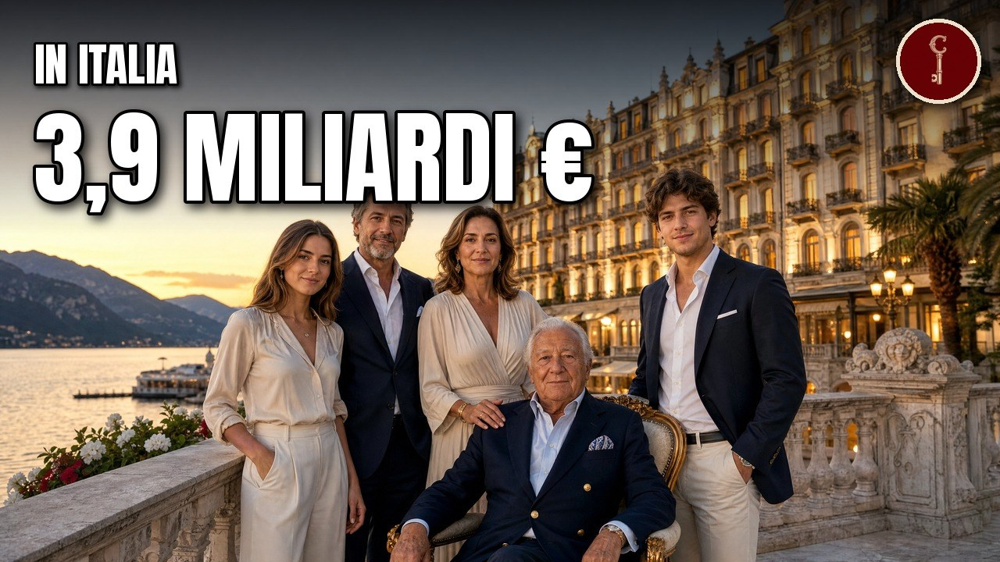

Hotel
I 35 imperi milionari degli hotel in Italia e chi li controlla

Il video esce su YouTube il 2 novembre alle 13:00.
Fonti della ricerca
- topaziende.quotidiano.net
- Terme di Saturnia - Wikipedia
- milanofinanza.it
- topaziende.quotidiano.net
- qualitytravel.it
- leonardo-hotels.com
- bebeez.it
- topaziende.quotidiano.net
- en.globes.co.il
- simplywall.st
- Air Dolomiti - Wikipedia
- en.ilsole24ore.com
- italiabsolutely.com
- topaziende.quotidiano.net
- bulgari.com
- Bulgari Hotels %26 Resorts - Wikipedia
- money.cnn.com
- mediakit.bulgari.com (PDF)
- hotelsforkings.com
- fortuneita.com
- topaziende.quotidiano.net
- skift.com
- Excelsior Hotel Gallia - Wikipedia
- ilfoglio.it
- voyages-d-affaires.com
- r2_A035
- Katara Hospitality - Wikipedia
- katarahospitality.com
- en.ilsole24ore.com
- katarahospitality.com
- topaziende.quotidiano.net
- tourmag.com
- Abano Terme - Wikipedia
- atoka.io
- Principe di Savoia - Wikipedia
- topaziende.quotidiano.net
- Dorchester Collection - Wikipedia
- hospitalitynet.org
- dev.visitsirmione.com (PDF)
- ilturista.info
- en.ilsole24ore.com
- topaziende.quotidiano.net
- baglionihotels.com
- Baglioni Hotels - Wikipedia
- fortuneita.com
- hoteliermaldives.com
- topaziende.quotidiano.net
- journaldespalaces.com
- press.fourseasons.com
- luoghi.italianbotanicalheritage.com
- journaldespalaces.com
- italiabsolutely.com
- topaziende.quotidiano.net
- ansa.it
- italiabsolutely.com
- atoka.io
- topaziende.quotidiano.net
- aziende.it
- en.ilsole24ore.com
- atoka.io
- en.ilsole24ore.com
- stories.hilton.com
- forbes.it
- sinahotels.com
- en.ilsole24ore.com
- topaziende.quotidiano.net
- Il Post
- sostenibilita.borgoegnazia.com (PDF)
- tg24.sky.it
- atoka.io
- en.ilsole24ore.com
- Borgo Egnazia - Wikipedia
- milanofinanza.it
- unibocconi.it
- atoka.io
- topaziende.quotidiano.net
- Charles Forte, Baron Forte - Wikipedia
- we-wealth.com
- Rocco Forte Hotels - Wikipedia
- roccofortehotels.com (PDF)
- roccofortehotels.com
- hotel-online.com
- aziende.it
- aziende.it
- atoka.io
- finestresullarte.info
- forbes.it
- horwathhtl.com (PDF)
- atoka.io
- qualitytravel.it
- fortune.com
- topaziende.quotidiano.net
- jingdaily.com
- lungarnocollection.com
- qualitytravel.it
- worldtravelawards.com
- en.ilsole24ore.com
- milanofinanza.it
- pravda.com.ua
- en.sigmalive.com
- Meli%C3%A1 Hotels International - Wikipedia
- meliahotelsinternational.com
- topaziende.quotidiano.net
- hosteltur.com
- tophotel.news
- tageskarte.io
- topaziende.quotidiano.net
- topaziende.quotidiano.net
- topaziende.quotidiano.net
- Belmond Ltd. - Wikipedia
- Villa d%27Este, Cernobbio - Wikipedia
- missionline.it
- milanofinanza.it
- qualitytravel.it
- finews.ch
- mangias.com
- en.ilsole24ore.com
- quotidiano.net
- fortuneita.com
- Azora (PDF)
- milanofinanza.it
- r2_A165
- qualitytravel.it
- money.it
- hnh.it
- en.ilsole24ore.com
- qualitytravel.it
- bebeez.it
- italiaoggi.it
- qualitytravel.it
- italiabsolutely.com
- Il Post
- hospitalitynet.org
- en.ilsole24ore.com
- registroaziende.it
- forbes.it
- qcterme.com
- timeout.com
- admin.corporate.eu.tech.qcterme.com (PDF)
- forbes.it
- B%26B Hotels - Wikipedia
- hotel-bb.com
- topaziende.quotidiano.net
- missionline.it
- en.ilsole24ore.com
- alpitour.it
- hotellerie.pambianconews.com
- ilsussidiario.net
- qualitytravel.it
- en.ilsole24ore.com
- UNA Hotels %26 Resorts - Wikipedia
- missionline.it
- websim.it
- topaziende.quotidiano.net
- qualitytravel.it
- emarketstorage.it (PDF)
- ilnordest.it
- bebeez.it
- atoka.io
- hotellerie.pambianconews.com
- isa.tn.it
- hospitality-on.com
- we-wealth.com
- r2_A214
- en.ilsole24ore.com
- qualitytravel.it
- qualitytravel.it
- atoka.io
- topaziende.quotidiano.net
- hospitalitynet.org
- Starhotels - Wikipedia
- referenceforbusiness.com
- fundinguniverse.com
- hospitality-on.com
- NH Hotel Group - Wikipedia
- eldebate.com
- hosteltur.com
- forbes.it
- qualitytravel.it
- topaziende.quotidiano.net
- aziende.it
Attribuzioni di immagini e video
Thermal_Dawn.jpg
Pardi Marco · CC BY-SA 4.0

Pardi Marco · CC BY-SA 4.0
Saturnia_Cascate_del_Mulino.jpg
Markus Bernet · CC BY-SA 2.5

Markus Bernet · CC BY-SA 2.5
Terme_di_Saturnia_-_Cascate_del_Mulino-0498.jpg
Raimond Spekking · CC BY-SA 3.0

Raimond Spekking · CC BY-SA 3.0
Sorgente_termale_di_Saturnia.jpg
Mariapatrizia · CC BY-SA 4.0

Mariapatrizia · CC BY-SA 4.0
Saturnia_hot_stream_in_June_2004.jpg
Viragored at English Wikipedia · CC BY-SA 3.0

Viragored at English Wikipedia · CC BY-SA 3.0
Cono_vulcanico_del_Monte_Amiata_dalla_Val_d'Orcia.jpg
Albarubescens · CC BY-SA 4.0

Albarubescens · CC BY-SA 4.0
Saturnia,_complesso_termale_01.JPG
sailko · CC BY-SA 3.0

sailko · CC BY-SA 3.0
Terme_di_Saturnia_-_Cascate_del_Mulino-0520.jpg
Raimond Spekking · CC BY-SA 3.0

Raimond Spekking · CC BY-SA 3.0
Saturnia,_complesso_termale_03.JPG
sailko · CC BY-SA 3.0

sailko · CC BY-SA 3.0
Terme_di_Saturnia_Parco_Termale_7.jpg
Mattze77 · CC BY-SA 4.0

Mattze77 · CC BY-SA 4.0
Cascate_del_Mulino_Aerial_01.jpg
Einaz80 · CC BY-SA 4.0

Einaz80 · CC BY-SA 4.0
Cascate_Mulino.jpg
Einaz80 · CC BY-SA 4.0

Einaz80 · CC BY-SA 4.0
Leonardo_Royal_Hotel_Southampton_2024.jpg
Gerd Fahrenhorst · CC BY 4.0

Gerd Fahrenhorst · CC BY 4.0
David_fattal.jpg
autore sconosciuto (dichiarato su Commons) · CC BY-SA 3.0

autore sconosciuto (dichiarato su Commons) · CC BY-SA 3.0
Leonardo_Hotel_Hannover_5764.jpg
Gerd Fahrenhorst · CC BY 4.0

Gerd Fahrenhorst · CC BY 4.0
Herods_Palace_Eilat_Hotel_MAY_2025_(1).jpg
Eagle003 · CC BY-SA 4.0
.jpg){kind=link}
Eagle003 · CC BY-SA 4.0
TASE_2019.jpg
דוד שי · CC BY-SA 4.0

דוד שי · CC BY-SA 4.0
Leonardo_Royal_Barcelona_Fira.jpg
Marc Sánchez (Fotograf) · CC BY-SA 4.0

Marc Sánchez (Fotograf) · CC BY-SA 4.0
Air_Dolomiti_Embraer_195LR_I-ADJR_MUC_2015_01.jpg
Julian Herzog (Website) · CC BY 4.0

Julian Herzog (Website) · CC BY 4.0
I-ADJZ_AIRCRAFT_Embraer_E195LR_1a.jpg
Sg1959 · CC BY-SA 4.0

Sg1959 · CC BY-SA 4.0
Gargnano,_Province_of_Brescia,_Italy_-_panoramio.jpg
7777777kz · CC BY 3.0

7777777kz · CC BY 3.0
Air_Dolomiti_Embraer_195LR_(ERJ-190-200LR)_I-ADJO_(25989927214).jpg
Kambui · CC BY 2.0
_I-ADJO_(25989927214).jpg){kind=link}
Kambui · CC BY 2.0
Gargnano,_Province_of_Brescia,_Italy_-_panoramio_(10).jpg
7777777kz · CC BY 3.0
.jpg){kind=link}
7777777kz · CC BY 3.0
Gargnano,_Province_of_Brescia,_Italy_-_panoramio_(11).jpg
7777777kz · CC BY 3.0
.jpg){kind=link}
7777777kz · CC BY 3.0
Gargnano,_Province_of_Brescia,_Italy_-_panoramio_(12).jpg
7777777kz · CC BY 3.0
.jpg){kind=link}
7777777kz · CC BY 3.0
BulgaristoreMilan.jpg
Sergio Calleja (Life is a trip) from Barcelona, Spain · CC BY-SA 2.0

Sergio Calleja (Life is a trip) from Barcelona, Spain · CC BY-SA 2.0
Bvlgari2.jpg
Antonio Barella · CC BY-SA 4.0

Antonio Barella · CC BY-SA 4.0
Marriottheadquarters.jpg
Coolcaesar at English Wikipedia · CC BY-SA 3.0

Coolcaesar at English Wikipedia · CC BY-SA 3.0
Milano_-_via_Fratelli_Gabba.jpg
Jwslubbock · CC BY-SA 3.0

Jwslubbock · CC BY-SA 3.0
Bernard_Arnault_(3)_-_2017_(cropped).jpg
Jérémy Barande · CC BY-SA 2.0
_-_2017_(cropped).jpg){kind=link}
Jérémy Barande · CC BY-SA 2.0
Bernard_Arnault_(5)_-_2017.jpg
Jérémy Barande · CC BY-SA 2.0
_-_2017.jpg){kind=link}
Jérémy Barande · CC BY-SA 2.0
Hotel Gallia Milano
Saggittarius A · CC BY-SA 4.0

Saggittarius A · CC BY-SA 4.0
Hotel Gallia da via Pisani
Saggittarius A · CC BY 4.0

Saggittarius A · CC BY 4.0
Hôtel Gallia - Milan (IT25) - 2022-09-02 - 2
Chabe01 · CC BY-SA 4.0
_-_2022-09-02_-_2.jpg){kind=link}
Chabe01 · CC BY-SA 4.0
Via Veneto (12888954954)
Simone Ramella from Roma, Italy · CC BY 2.0
.jpg){kind=link}
Simone Ramella from Roma, Italy · CC BY 2.0
Love In Paradise Abano Terme March 2010 (216666721)
Dario Dominico · CC BY 3.0
.jpeg){kind=link}
Dario Dominico · CC BY 3.0
Grand Hotel Orologio Abano Terme (PD) - Italia - 13787909045
Marika Bortolami · CC BY 2.0
_-_Italia_-_13787909045.jpg){kind=link}
Marika Bortolami · CC BY 2.0
Hotel Trieste & Victoria ad Abano Terme, veduta di tre quarti
Paolobon140 · CC BY-SA 4.0

Paolobon140 · CC BY-SA 4.0
Hotel Trieste & Victoria ad Abano Terme, il Bollettino della Vittoria
Paolobon140 · CC BY-SA 4.0

Paolobon140 · CC BY-SA 4.0
Hotel Principe di Savoia
Marco Del Torchio 95 · CC BY 3.0

Marco Del Torchio 95 · CC BY 3.0
Terme della Boiola, Sirmione, Italia
memedesimo · CC BY-SA 2.0

memedesimo · CC BY-SA 2.0
Terme di Sirmione 1
RatMan1234 · CC BY-SA 4.0

RatMan1234 · CC BY-SA 4.0
Hotel Luna Baglioni.JPG
Abxbay · CC BY-SA 3.0

Abxbay · CC BY-SA 3.0
Luna Hotel Baglioni.jpg
Toni Paci · CC BY-SA 3.0

Toni Paci · CC BY-SA 3.0
Borgo pinti 99, palazzo della gherardesca 02.JPG
Sailko · CC BY 3.0

Sailko · CC BY 3.0
Palazzo della gherardesca, giardino 13.JPG
sailko · CC BY-SA 3.0

sailko · CC BY-SA 3.0
Palazzo della gheradesca, interno, salone 02.jpg
Francesco Bini · CC BY-SA 4.0

Francesco Bini · CC BY-SA 4.0
Borgo pinti 99, palazzo della gherardesca, lapide a bartolomeo scala.jpg
Francesco Bini · CC BY-SA 4.0

Francesco Bini · CC BY-SA 4.0
Palazzo della gherardesca, giardino 07.JPG
sailko · CC BY-SA 3.0

sailko · CC BY-SA 3.0
Palazzo della gherardesca, giardino 11.JPG
sailko · CC BY-SA 3.0

sailko · CC BY-SA 3.0
SanCascianoDeiBagniPanorama3.JPG
LigaDue · CC BY-SA 4.0

LigaDue · CC BY-SA 4.0
San giuliano terme, terme 01.JPG
sailko · CC BY 2.5

sailko · CC BY 2.5
Grotta Giusti (ingresso).JPG
User:Fluctuat · CC BY 2.5

User:Fluctuat · CC BY 2.5
Thunderstorm, July 2011, Chia Laguna Resort - panoramio.jpg
Mykola Berkash · CC BY 3.0

Mykola Berkash · CC BY 3.0
Hilton cavalieri roma, piscina.JPG
sailko · CC BY-SA 3.0

sailko · CC BY-SA 3.0
Panorama di Roma da Monte Mario - panoramio.jpg
Fabio Poggi · CC BY 3.0

Fabio Poggi · CC BY 3.0
Hilton cavalieri roma, galelria.JPG
sailko · CC BY-SA 3.0

sailko · CC BY-SA 3.0
Hilton cavalieri roma, gb tiepolo, 1724-25, 01.JPG
Sailko · CC BY-SA 3.0

Sailko · CC BY-SA 3.0
Sorrento Hilton Terrazzo.jpg
KaiBorgeest · CC BY-SA 4.0

KaiBorgeest · CC BY-SA 4.0
Molino Stucky (Venice).jpg
Didier Descouens · CC BY-SA 4.0
.jpg){kind=link}
Didier Descouens · CC BY-SA 4.0
Albergo Hilton Molino Stucky Venice.JPG
Gelatina · CC BY-SA 3.0

Gelatina · CC BY-SA 3.0
Centurion pal hotel.JPG
Abxbay · CC BY-SA 3.0

Abxbay · CC BY-SA 3.0
Sina Villa Medici, Autograph Collection.jpg
Peaceray · CC BY-SA 3.0

Peaceray · CC BY-SA 3.0
20180416 IJF Perugia Hotel Brufani.jpg
Kaspo · CC BY-SA 4.0

Kaspo · CC BY-SA 4.0
Venice, Canal Grande, Dorsoduro, Plzo Genovese.jpg
Armin Kleiner · CC BY-SA 4.0

Armin Kleiner · CC BY-SA 4.0
Villa Igiea a Palermo lato giardino.jpg
Wolfgang Moroder · CC BY-SA 3.0

Wolfgang Moroder · CC BY-SA 3.0
Piazza della repubblica 7, palazzo savoia (hotel savoy) 02.jpg
Sailko · CC BY 3.0
_02.jpg){kind=link}
Sailko · CC BY 3.0
2024-06-14 50th G7 summit 000150298.jpg
Gabinetto del Primo ministro del Giappone · CC BY 4.0

Gabinetto del Primo ministro del Giappone · CC BY 4.0
14.06.2024 - Sessão de trabalho do G7 + países convidados e organizações internacionais sobre Inteligência Artificial, Energia, África e Mediterrâneo (53791242980).jpg
Lula Oficial (Ricardo Stuckert/PR) · CC BY-SA 2.0
.jpg){kind=link}
Lula Oficial (Ricardo Stuckert/PR) · CC BY-SA 2.0
2024-06-14 50th G7 summit 000150297.jpg
Gabinetto del Primo ministro del Giappone · CC BY 4.0

Gabinetto del Primo ministro del Giappone · CC BY 4.0
Grand Hotel Tremezzo on Lake Como (Lago di Como).JPG
Business Slayer · CC BY-SA 3.0
.JPG){kind=link}
Business Slayer · CC BY-SA 3.0
Moltrasio - Villa Lucini Passalacqua 0657.JPG
Phyrexian · CC BY-SA 4.0

Phyrexian · CC BY-SA 4.0
Lake Como from Gran Hotel Tremezzo (51366681735).jpg
Nan Palmero · CC BY 2.0
.jpg){kind=link}
Nan Palmero · CC BY 2.0
Grand Hotel Tremezzo sdfg.jpg
Luciof · CC BY-SA 3.0

Luciof · CC BY-SA 3.0
Limone sul garda visto dal battello.jpg
MRB · CC BY-SA 3.0

MRB · CC BY-SA 3.0
Salvatore ferragamo, décolleté iride, 1930
Francesco Bini · CC BY-SA 4.0

Francesco Bini · CC BY-SA 4.0
Museo ferragamo, campionario storico di calzature femminili 01
Sailko · CC BY 3.0

Sailko · CC BY 3.0
Borgo San Jacopo, case e palazzi affacciati sull'arno, 01
Francesco Bini · CC BY-SA 4.0

Francesco Bini · CC BY-SA 4.0
8974 - Milano - Corso Venezia - Portale del Seminario (1652) - Foto Giovanni Dall'Orto 25-Apr-2007
Giovanni Dall'Orto · CC BY-SA 2.5 it

Giovanni Dall'Orto · CC BY-SA 2.5 it
Palazzo Spini Feroni
John Samuel · CC BY-SA 4.0

John Samuel · CC BY-SA 4.0
Santa Margherita di Pula - panoramio
Francesco Lo Bello · CC BY 3.0

Francesco Lo Bello · CC BY 3.0
Anatoly Karpov 2017 april
Veni Markovski | Вени Марковски · CC BY-SA 4.0

Veni Markovski | Вени Марковски · CC BY-SA 4.0
Tour Sequana Accor
OpaleTardigrade · CC BY-SA 4.0

OpaleTardigrade · CC BY-SA 4.0
Hotel Cipriani Venezia
Abxbay · CC BY-SA 4.0

Abxbay · CC BY-SA 4.0
Villa san michele fiesole 00
jaycross · CC BY 2.0

jaycross · CC BY 2.0
Bernard Arnault (3) - 2017 (cropped)
Jérémy Barande · CC BY-SA 2.0

Jérémy Barande · CC BY-SA 2.0
Lake Como - Villa d'Este.jpg
GhePeU · CC BY-SA 3.0

GhePeU · CC BY-SA 3.0
Statua di Tolomeo Gallio Como.jpg
Mariusowitsch · CC BY 4.0

Mariusowitsch · CC BY 4.0
Cernobbio - Villa d'Este - 2026-09-29 13-58-08 001.jpeg
KristaKrista · CC BY-SA 4.0

KristaKrista · CC BY-SA 4.0
Cernobbio hillside from Lake Como.jpg
Daniel Case · CC BY-SA 3.0

Daniel Case · CC BY-SA 3.0
Vila la massa 01.JPG
sailko · CC BY-SA 3.0

sailko · CC BY-SA 3.0
Grand Hotel et des Palmes (Palermo) - Façade.jpg
HaguardDuNord · CC BY 4.0
_-_Façade.jpg){kind=link}
HaguardDuNord · CC BY 4.0
Pescara - foce del fiume vista dal ponte del mare.JPG
Luca Aless · CC BY-SA 4.0

Luca Aless · CC BY-SA 4.0
Mestre R01.jpg
Marc Ryckaert · CC BY-SA 4.0

Marc Ryckaert · CC BY-SA 4.0
Voco Milan-Fiere exterior at night.jpg
Sdkb · CC BY-SA 4.0

Sdkb · CC BY-SA 4.0
Voco Milan-Fiere lobby seating area.jpg
Sdkb · CC BY-SA 4.0

Sdkb · CC BY-SA 4.0
Lanificio Calamai 10.jpg
Massimilianogalardi · CC BY-SA 3.0

Massimilianogalardi · CC BY-SA 3.0
Piazza Marsilio Ficino, Figline Valdarno.jpg
Giulia Trevisanello · CC BY-SA 4.0

Giulia Trevisanello · CC BY-SA 4.0
Italy by Drone 2017 - Sardinia -2, Garibaldi's home, Cala di Volpe, 007 Location & more.webm (tratto 0:39,6-0:42,0, senza le didascalie del video)
Electric Life · CC BY 3.0
Electric Life · CC BY 3.0
Pitrizza, Sardinien, Italy - panoramio (1).jpg
Николай Максимович · CC BY 3.0
.jpg){kind=link}
Николай Максимович · CC BY 3.0
Sardegna's Costa Smeralda Drone Views.webm (tratto 2:08-2:17)
Electric Life · CC BY 3.0
Electric Life · CC BY 3.0
Doha Skyline 01.jpg
Zairon · CC BY 4.0

Zairon · CC BY 4.0
2052 CMYK TMI piscina notte.jpg
Ghisolabella · CC BY-SA 3.0

Ghisolabella · CC BY-SA 3.0
Bagni bormio 068.jpg
Ghisolabella · CC BY-SA 3.0

Ghisolabella · CC BY-SA 3.0
Bormio dai Bagni Vecchi.jpg
Maurizio Moro5153 · CC BY-SA 4.0

Maurizio Moro5153 · CC BY-SA 4.0
6703 CMYK TMI giardino e mura.jpg
Ghisolabella · CC BY-SA 3.0

Ghisolabella · CC BY-SA 3.0
Tram ATM storico 1503.jpg
Giorgio Stagni · CC BY-SA 3.0

Giorgio Stagni · CC BY-SA 3.0
Bagni vecchi di Bormio.JPG
Salento81 · CC BY-SA 3.0

Salento81 · CC BY-SA 3.0
Una Hotel Cusani - panoramio.jpg
Mikhail Deynekin · CC BY-SA 3.0

Mikhail Deynekin · CC BY-SA 3.0
Blackstone HQ - 345 Park Avenu.jpg
Americasroof (talk) · CC BY-SA 3.0

Americasroof (talk) · CC BY-SA 3.0
Unipol Tower.jpg
Davide Giuliani · CC BY-SA 4.0

Davide Giuliani · CC BY-SA 4.0
Graziano Debellini
Daniele.sofia · CC BY-SA 3.0

Daniele.sofia · CC BY-SA 3.0
Starhotels Anderson Milan
Jwslubbock · CC BY-SA 4.0

Jwslubbock · CC BY-SA 4.0
Via degli Strozzi angolo via dei pescioni 2, palazzo dell'hotel helvetia & bristol, 00
Sailko · CC BY 3.0

Sailko · CC BY 3.0
Rio scoacamini hotel splendid venezia
Abxbay · CC BY-SA 3.0

Abxbay · CC BY-SA 3.0
The Michelangelo - New York (54076909831)
ajay_suresh · CC BY 2.0

ajay_suresh · CC BY 2.0
Via degli Strozzi angolo via dei pescioni 2, palazzo dell'hotel helvetia & bristol, 01
Sailko · CC BY 3.0

Sailko · CC BY 3.0
Jolly Hotel Palermo - panoramio
kajikawa · CC BY 3.0

kajikawa · CC BY 3.0
Valdagno Marzotto
gualtiero from padova, italia · CC BY-SA 2.0

gualtiero from padova, italia · CC BY-SA 2.0
Hotel NH Vittorio Veneto Roma
Blackcat · CC BY-SA 4.0

Blackcat · CC BY-SA 4.0
Palacio de la Bolsa de Madrid - 20260816 001
Américo Toledano · CC BY-SA 4.0

Américo Toledano · CC BY-SA 4.0
Bologna — Mercure Bologna Centro (outside)
photographer: Mattes · CC BY-SA 4.0

photographer: Mattes · CC BY-SA 4.0
NH Hotel Largo Augusto
Saggittarius A · CC BY-SA 4.0

Saggittarius A · CC BY-SA 4.0
Mappe
- Confini amministrativi italiani (openpolis/geojson-italy, dati ISTAT) · CC BY 4.0 · fonte